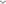

<div class="views-teams-config">

    <div class="main-views-wrapper">
        <div class="logged-user">
            <div class="user-initials">
                RP
            </div>
            <div class="welcome-text">
                Welcome to Workboard Robert Patricia!
            </div>
        </div>
        <div class="views-wrapper">
            <div class="select-views">
                <button mat-button>
                    
                    Default View
                </button>
                <button mat-button>
                    
                    My Custom View
                </button>
                <button mat-button>
                    
                    My Custom View 2
                </button>
                <button mat-button class="add-views-button">
                    
                </button>
            </div>
        </div>
    </div>
    <div class="teams-configuration">
        <div class="save-view">
            <button mat-button>
                Save View
            </button>
        </div>
        <div class="select-teams-dropdown">
            <mat-form-field>
                <mat-label>Favorite food</mat-label>
                <mat-select>
                  <mat-option *ngFor="let food of foods" [value]="food.value">
                    {{food.viewValue}}
                  </mat-option>
                </mat-select>
              </mat-form-field>
              <button mat-button>
                
              </button>
        </div>
        <div class="set-default">
            
            <label>Set as Default</label>
            <!-- <button mat-button>
                
            </button> -->

            <button mat-button [matMenuTriggerFor]="setDefault">
                
            </button>
              <mat-menu #setDefault="matMenu" class="create-order-submenu">
                <button mat-menu-item>System Reports</button>
                <button mat-menu-item>Report Builder</button>
                <button mat-menu-item>Scheduled Reports</button>
                <button mat-menu-item>Performance Analytics</button>
              </mat-menu>
        </div>
    </div>
      
</div>
